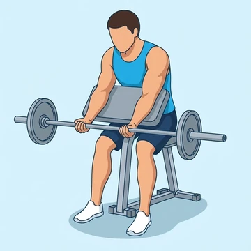

Barbell Preacher Curl
This isolation exercise targets the biceps brachii and brachialis by fixing the upper arms on a preacher bench, minimizing momentum and maximizing tension.
Upper arms · Barbell · Intermediate


Muscles worked by the Barbell Preacher Curl
Primary
Secondary
Also called: bicep, biceps brachii, biceps muscle, guns.
Equipment
Also called: bar, olympic barbell, straight bar, olympic bar, power bar.
How to do the Barbell Preacher Curl
- Sit on a preacher bench with your chest against the pad, gripping a barbell with an underhand, shoulder-width grip.
- Position your upper arms firmly against the pad, ensuring your elbows are slightly bent at the start.
- Curl the barbell upwards by contracting your biceps, keeping your upper arms stationary on the pad.
- Squeeze your biceps at the top of the movement, focusing on peak contraction.
- Slowly lower the barbell back to the starting position, controlling the eccentric phase.
- Fully extend your arms at the bottom to achieve a complete stretch in the biceps.
Form tips
- Maintain constant tension on the biceps throughout the entire range of motion.
- Avoid lifting your elbows off the pad; this indicates you're using too much weight or momentum.
- Focus on a controlled eccentric (lowering) phase to maximize muscle damage and growth.
- Keep your wrists straight and aligned with your forearms to prevent strain.
At a glance
| Body part | Upper arms |
|---|---|
| Category | Strength |
| Force type | Pull |
| Mechanic | Isolation |
| Difficulty | Intermediate |
| Equipment | Barbell |
| Goals | Hypertrophy |
| Tags | Arm day, Pull day |
| MET | 5.0 (metabolic equivalent, for calorie estimates) |
| Unilateral | No |
| Bodyweight | No |
| Dataset id | barbell-preacher-curl |
Barbell Preacher Curl in German & Spanish
| German | Langhantel-Preacher-Curl |
|---|---|
| Spanish | Curl Predicador con Barra |
Descriptions, instructions and tips ship in all three languages in the JSON.
Related exercises
Exercise data (JSON)
The record below is exactly what exercises.json ships for this exercise — names, descriptions, instructions and tips in English, German and Spanish.
{
"id": "barbell-preacher-curl",
"name_en": "Barbell Preacher Curl",
"name_de": "Langhantel-Preacher-Curl",
"name_es": "Curl Predicador con Barra",
"description_en": "This isolation exercise targets the biceps brachii and brachialis by fixing the upper arms on a preacher bench, minimizing momentum and maximizing tension.",
"description_de": "Diese Isolationsübung zielt auf den Bizeps brachii und den Brachialis ab, indem die Oberarme auf einer Preacher-Bank fixiert werden, um Schwung zu minimieren und die Spannung zu maximieren.",
"description_es": "Este ejercicio de aislamiento trabaja el bíceps braquial y el braquial al fijar los brazos en un banco predicador, minimizando el impulso y maximizando la tensión muscular.",
"category": "strength",
"force_type": "pull",
"mechanic": "isolation",
"difficulty": "intermediate",
"equipment": "barbell",
"body_part": "upper_arms",
"primary_muscles": [
"biceps_brachii"
],
"secondary_muscles": [
"brachialis"
],
"goals": [
"hypertrophy"
],
"tags": [
"arm_day",
"pull_day"
],
"variation_group": "bicep-curl",
"is_unilateral": false,
"is_bodyweight": false,
"instructions_en": [
"Sit on a preacher bench with your chest against the pad, gripping a barbell with an underhand, shoulder-width grip.",
"Position your upper arms firmly against the pad, ensuring your elbows are slightly bent at the start.",
"Curl the barbell upwards by contracting your biceps, keeping your upper arms stationary on the pad.",
"Squeeze your biceps at the top of the movement, focusing on peak contraction.",
"Slowly lower the barbell back to the starting position, controlling the eccentric phase.",
"Fully extend your arms at the bottom to achieve a complete stretch in the biceps."
],
"instructions_de": [
"Setze dich auf eine Preacher-Bank, die Brust am Polster, und greife eine Langhantel im Untergriff schulterbreit.",
"Platziere deine Oberarme fest auf dem Polster und stelle sicher, dass deine Ellbogen am Start leicht gebeugt sind.",
"Hebe die Langhantel durch Kontraktion deines Bizeps nach oben, während deine Oberarme unbeweglich auf dem Polster bleiben.",
"Spanne deinen Bizeps am oberen Punkt der Bewegung fest an, konzentriere dich auf die Spitzenkontraktion.",
"Senke die Langhantel langsam und kontrolliert in die Ausgangsposition zurück.",
"Strecke deine Arme am unteren Punkt vollständig aus, um eine komplette Dehnung im Bizeps zu erreichen."
],
"instructions_es": [
"Siéntate en un banco predicador con el pecho contra la almohadilla, sujetando una barra con agarre supino al ancho de los hombros.",
"Apoya firmemente tus brazos en la almohadilla, asegurándote de que tus codos estén ligeramente flexionados al inicio.",
"Sube la barra contrayendo tus bíceps, manteniendo tus brazos inmóviles sobre la almohadilla.",
"Aprieta los bíceps en la parte superior del movimiento, enfocándote en la contracción máxima.",
"Baja lentamente la barra a la posición inicial, controlando la fase excéntrica.",
"Extiende completamente tus brazos en la parte inferior para lograr un estiramiento completo en los bíceps."
],
"tips_en": [
"Maintain constant tension on the biceps throughout the entire range of motion.",
"Avoid lifting your elbows off the pad; this indicates you're using too much weight or momentum.",
"Focus on a controlled eccentric (lowering) phase to maximize muscle damage and growth.",
"Keep your wrists straight and aligned with your forearms to prevent strain."
],
"tips_de": [
"Halte während der gesamten Bewegung konstante Spannung auf dem Bizeps.",
"Vermeide es, die Ellbogen vom Polster zu heben; dies deutet auf zu viel Gewicht oder Schwung hin.",
"Konzentriere dich auf eine kontrollierte exzentrische (senkende) Phase, um Muskelwachstum zu maximieren.",
"Halte deine Handgelenke gerade und in Linie mit deinen Unterarmen, um Belastungen vorzubeugen."
],
"tips_es": [
"Mantén una tensión constante en los bíceps durante todo el rango de movimiento.",
"Evita levantar los codos de la almohadilla; esto indica que estás usando demasiado peso o impulso.",
"Concéntrate en una fase excéntrica (bajada) controlada para maximizar el daño muscular y el crecimiento.",
"Mantén tus muñecas rectas y alineadas con tus antebrazos para prevenir tensiones."
],
"met": 5.0,
"images": {
"flat": {
"start": "images/flat/barbell-preacher-curl-start.webp",
"peak": "images/flat/barbell-preacher-curl-peak.webp"
}
}
}Fetch just this exercise
const { exercises } = await fetch(
"https://exercise-dataset.com/exercises.json"
).then(r => r.json());
const ex = exercises.find(e => e.id === "barbell-preacher-curl");Free for personal and commercial in-app use with attribution (“Exercise data by RepDB”) — see the license and ready-made attribution snippets. Redistributing the data as a dataset or API is not permitted.